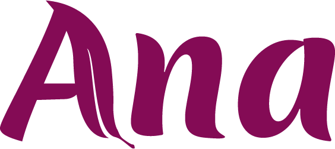

Card 1 · Capa

Card 2 · Por que o nome mudou
Por que o nome
estava errado
1
Não são cistos.São folículos que pararam de amadurecer. A palavra assustou gerações de mulheres à toa.
2
Não começa no ovário.O ovário é onde você vê o sintoma. A raiz é metabólica: insulina alta, inflamação e excesso de androgênios.
3
O nome atrasou o cuidado.Olhar só para o ovário fez muita mulher sair do consultório com uma receita — e nenhuma palavra sobre glicemia, sono e alimentação.

Card 3 · O que muda no prato

O tratamento
começa no prato
Se o centro é metabólico, a comida vira ferramenta hormonal.
- Metade do prato em vegetais e fibras.
- Proteína em todas as refeições.
- Gordura boa: azeite, abacate, castanhas.
- Carboidrato entra — mas nunca sozinho.
Menos pico de insulina, menos estímulo androgênico — é por aí que o ciclo se reorganiza.
Card 4 · CTA
A parte que
ninguém pula
Comida não substitui o seu acompanhamento. Glicemia, hormônios, sono e treino precisam ser olhados juntos.
Trocar o nome não é detalhe: é tratar a causa, não só o sintoma.
Comenta SOMP que eu te mando o passo a passo de como montar o prato.